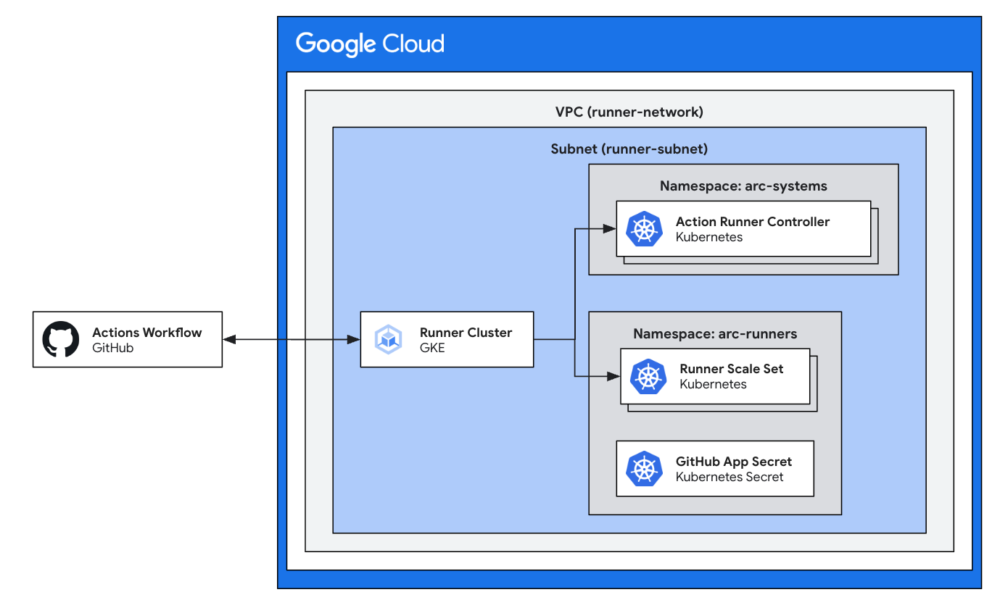

Reference Guide: Deploy and use GitHub Actions Runners on GKE¶
Overview¶
This guide walks you through the process of setting up self-hosted GitHub
Actions Runners on Google Kubernetes Engine (GKE) using the Terraform module
terraform-google-github-actions-runners.
It then provides instructions on how to create a basic GitHub Actions workflow
to leverage these runners.

Prerequisites¶
- Terraform: Install Terraform on your local machine or use Cloud Shell
- Google Cloud Project: Have a Google Cloud project with a Billing Account
linked and the following APIs enabled:
- Cloud Resource Manager API
cloudresourcemanager.googleapis.com - Identity and Access Management API
iam.googleapis.com - Kubernetes Engine API
container.googleapis.com - Service Usage API
serviceusage.googleapis.com
- Cloud Resource Manager API
- GitHub Account: Have a GitHub organization, either personal or enterprise, where you have administrator access.
Run the following command to enable the prerequisite APIs:
gcloud services enable \
cloudresourcemanager.googleapis.com \
iam.googleapis.com \
container.googleapis.com \
serviceusage.googleapis.com \
--project <YOUR_PROJECT_ID>
Register a GitHub App for Authenticating ARC¶
Using a GitHub App for authentication allows you to make your self-hosted runners available to a GitHub organization that you own or have administrative access to. For more details on registering GitHub Apps, see GitHub’s documentation.
You will need 3 values from this section to use as inputs in the Terraform module:
- GitHub App ID
- GitHub App Private Key
- GitHub App Installation ID
Navigate to your Organization GitHub App settings¶
- Click your profile picture in the top-right
- Click Your organizations
- Select the organization you want to use for this walkthrough
- Click Settings
- Click \<> Developer settings
- Click GitHub Apps
Create a new GitHub App¶
- Click New GitHub App
- Under “GitHub App name”, choose a unique name such as “my-gke-arc-app”
- Under “Homepage URL” enter
https://github.com/actions/actions-runner-controller - Under “Webhook,” uncheck Active.
- Under “Permissions,” click Repository permissions and use the dropdown
menu to select the following permissions:
- Metadata: Read-only
- Under “Permissions,” click Organization permissions and use the dropdown
menu to select the following permissions:
- Self-hosted runners: Read and write
- Click the Create GitHub App button
Gather required IDs and keys¶
- On the GitHub App’s page, save the value for “App ID”
- You will use this as the value for
gh_app_idin the Terraform module
- You will use this as the value for
- Under “Private keys” click Generate a private key. Save the
.pemfile for later.- You will use this as the value for
gh_app_private_keyin the Terraform module
- You will use this as the value for
- In the menu at the top-left corner of the page, click Install App, and
next to your organization, click Install to install the app on your
organization.
- Choose All repositories to allow any repository in your org to have access to your runners
- Choose Only select repositories to allow specific repos to have access to your runners
- Note the app installation ID, which you can find on the app installation
page, which has the following URL format:
https://github.com/organizations/ORGANIZATION/settings/installations/INSTALLATION_ID- You will use this as the value for
gh_app_installation_idin the Terraform module.
- You will use this as the value for
Configure Terraform example¶
Open the Terraform example¶
Open the Terraform module repository in Cloud Shell automatically by clicking the button:

Clicking this button will clone the repository into Cloud Shell, change into the
example directory, and open the main.tf file in the Cloud Shell Editor.
Modify Terraform example variables¶
- Insert your Google Cloud Project ID as the value of
project_id - Modify the sample values of the following variables with the values you
saved from earlier.
gh_app_id: insert the value of the App ID from the GitHub App pagegh_app_installation_id: insert the value from the URL of the app installation pagegh_app_private_key:- Copy the
.pemfile to example directory, alongside themain.tffile - Insert the
.pemfilename you downloaded after generating the private key for the app, like so:gh_app_private_key = file("example.private-key.pem")
- Warning: Terraform will store the private key in state as plaintext. It’s recommended to secure your state file by using a backend such as a GCS bucket with encryption. You can do so by following these instructions.
- Copy the
- Modify the value of
gh_config_urlwith the URL of your GitHub organization. It will be in the format ofhttps://github.com/ORGANIZATION - (Optional) Specify any other parameters that you wish. For a full list of variables you can modify, refer to the module documentation.
Deploy the example¶
- Initialize Terraform: Run
terraform initto download the required providers. - Plan: Run
terraform planto preview the changes that will be made. - Apply: Run
terraform applyand confirm to create the resources.
You will see the runners become available in your GitHub Organization:
- Go to your GitHub organization page
- Click Settings
- Open the “Actions” drop-down in the left menu and choose Runners
You should see the runners appear as “arc-runners”
Creating a GitHub Actions Workflow¶
- Create a new GitHub repository within your organization.
- In your GitHub repository, click the Actions tab.
- Click New workflow
- Under “Choose workflow” click set up a workflow yourself
-
Paste the following configuration into the text editor:
-
Click Commit changes to save the workflow to your repository.
Test the GitHub Actions Workflow¶
- Go back to the Actions tab in your repository.
- In the left menu, select the name of your workflow. This should be “Actions Runner Controller Demo” if you left the above configuration unchanged
- Click Run workflow to open the drop-down menu, and click Run workflow
- The sample workflow executes on your GKE-hosted ARC runner set. You can view the output within the GitHub Actions run history.
Cleanup¶
Teardown Terraform-managed infrastructure¶
-
Navigate back into the example directory you previously ran
terraform apply -
Destroy Terraform-managed infrastructure
Warning: this will destroy the GKE cluster, example VPC, service accounts, and the Helm-managed workloads previously deployed by this example.
Delete GitHub resources¶
If you created a new GitHub App for testing purposes of this walkthrough, you can delete it via the following instructions. Note that any services authenticating via this GitHub App will lose access.
- Navigate to your Organization GitHub App settings
- Click your profile picture in the top-right
- Click Your organizations
- Select the organization you used for this walkthrough
- Click Settings
- Click the \<> Developer settings drop-down
- Click GitHub Apps
- In the row where your GitHub App is listed, click Edit
- In the left-side menu, click Advanced
- Click Delete GitHub App
- Type the name of the GitHub App to confirm and delete.